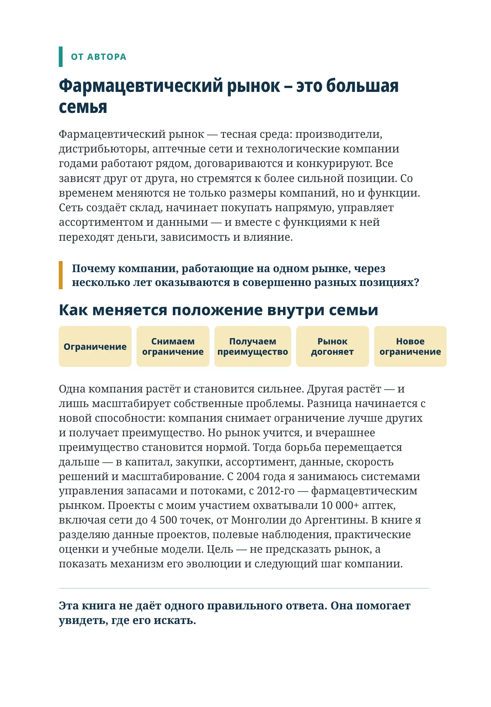

От автора
Фармацевтический рынок – это большая семья
Фармацевтический рынок — тесная среда: производители, дистрибьюторы, аптечные сети и технологические компании годами работают рядом, договариваются и конкурируют. Все зависят друг от друга, но стремятся к более сильной позиции. Со временем меняются не только размеры компаний, но и функции. Сеть создаёт склад, начинает покупать напрямую, управляет ассортиментом и данными — и вместе с функциями к ней переходят деньги, зависимость и влияние.
Почему компании, работающие на одном рынке, через несколько лет оказываются в совершенно разных позициях?
Как меняется положение внутри семьи
Одна компания растёт и становится сильнее. Другая растёт — и лишь масштабирует собственные проблемы. Разница начинается с новой способности: компания снимает ограничение лучше других и получает преимущество. Но рынок учится, и вчерашнее преимущество становится нормой. Тогда борьба перемещается дальше — в капитал, закупки, ассортимент, данные, скорость решений и масштабирование. С 2004 года я занимаюсь системами управления запасами и потоками, с 2012-го — фармацевтическим рынком. Проекты с моим участием охватывали 10 000+ аптек, включая сети до 4 500 точек, от Монголии до Аргентины. В книге я разделяю данные проектов, полевые наблюдения, практические оценки и учебные модели. Цель — не предсказать рынок, а показать механизм его эволюции и следующий шаг компании.
Эта книга не даёт одного правильного ответа. Она помогает увидеть, где его искать.